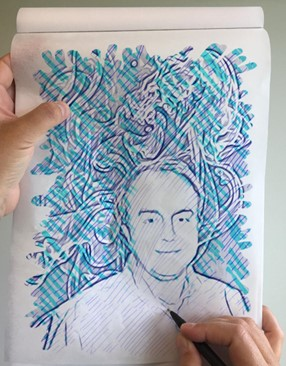
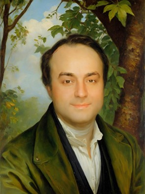

AI Explorations
A small gallery of generative AI experiments and visual explorations. (This page is intentionally lightweight; research outputs are listed under Publications.)
Fun fact: I use creative experiments to pressure-test prompting, controllability, and evaluation intuition that later informs research practice.

